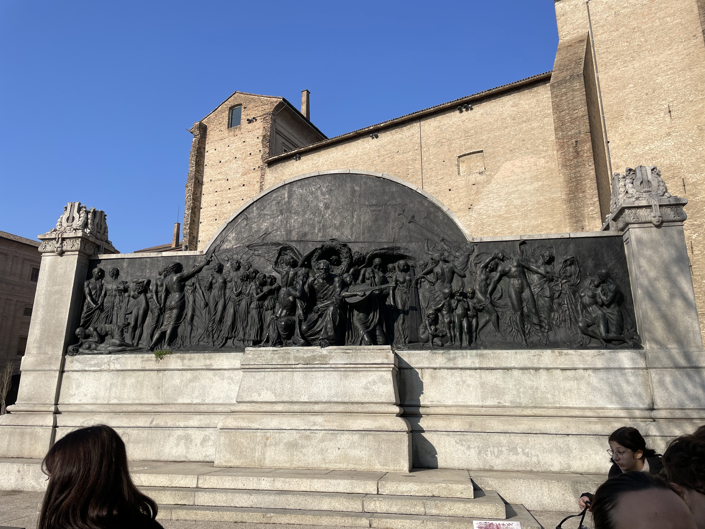
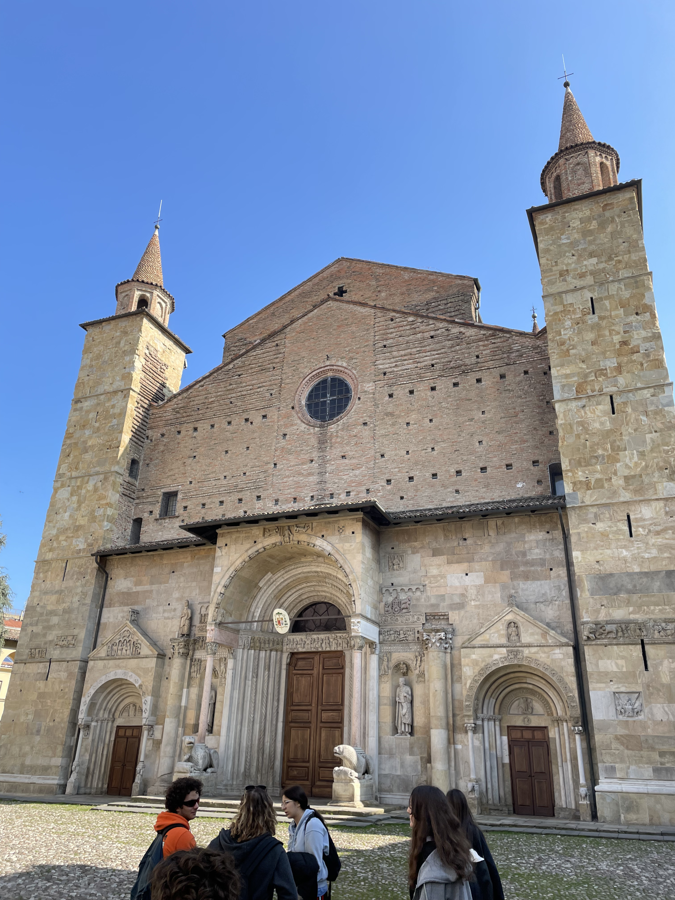
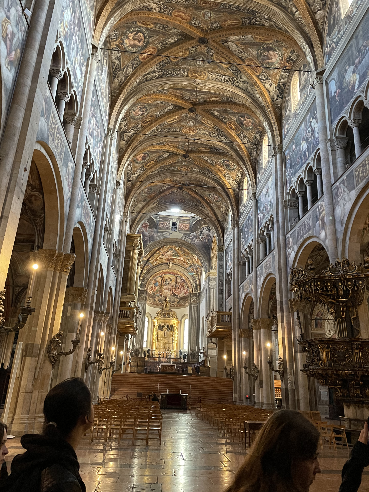
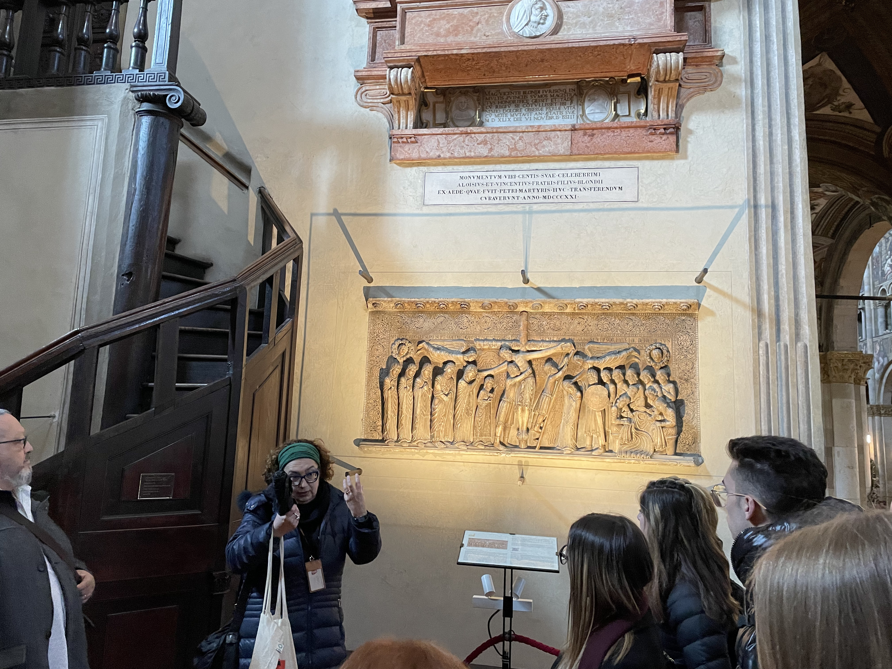

Preparazione
Il mio viaggio è bello, e per questo viaggio vado in una città d’Italia del Nord che si chiama “Fidenza”. Questa città si trova nella provincia di Parma in Emilia-Romagna. Il viaggio in bus dura otto ore. Per prepararmi a casa mia, ho cominciato a ascoltare musiche italiane per praticare la lingua nella mia testa (e di più le canzone mi piacciono dunque mi fanno passare il tempo un po’). Dopo abbiamo fatto la mia valigia con mia madre per prendere le mie cose di cui avrò bisogno più tardi a Fidenza, come i vestiti etcétera… Mi sono dato 1 oggetto per questo viaggio, cercare di non rimanere con i francesi ma essere con gli italiani per praticare la lingua e avere dei bei ricordi.
Giovedì
Questo è il giorno ! E oggi prendo il bus per andare vedere il mio corrispondente italiano e vedere un magnifico paese che mi piace tanto ! Ma la durata dell’ bus è di otto ore… Allora ho preso con me le mie cuffie per ascoltare delle musiche italiane e vedere una serie che si chiama Loki su Disney +. La mattina mi sono svegliato alle sette per questo giorno, mi sono lavato i denti, e ho preso la valigia per andare al liceo prendere il bus ! Per cominciare il professore Signore Biancarelli ha fatto la chiamata, eravamo tutti dunque abbiamo potuto andare in bus. Ci siamo fermati molte volte per mangiare e camminare un po’. E quando abbiamo visto il segno che siamo arrivati in Italia, era incredibile !!! Ero troppo felice. Quando siamo arrivati alla destinazione che è Fidenza, tutta la classe ha potuto vedere i nostri compagni italiani che ci aspettano. Ho visto per la prima volta il mio corrispondente: Gianpietro, perché ci siamo parlati con i nostri telefoni su Whatsapp, ma vederli nella realtà è intimidatorio. Abbiamo parlato un po’ del bus e direttamente siamo andati in macchina e andare a casa della famiglia per mettere la mia valigia a casa perché questa sera usciamo con gli amici di Gianpietro per conoscersi. Questa sera ho visto Francesco che è il ragazzo che secondo me è incredibile (e ancora il corrispondente di Jarry), è molto divertente e andiamo d’accordo. Dopo la serata, il mio corrispondente e io siamo andati a casa per mangiare una pizza fatta in casa di suo fratello, era buonissima. Dopo, un po’ più tardi, abbiamo suonato la chitarra perché il fratello di Gianpietro, Lui e io sappiamo suonare, questo ricordo era un bel ricordo per io
Venerdì
Questa giornata, siamo andati a Parma, una bella città, per andare a vederla, abbiamo preso il treno alla stazione di Fidenza. Abbiamo aspettato secondo me quindici minuti, non mi ricordo. E dopo siamo andati nel treno per dieci minuti di viaggio e dopo siamo a Parma, la prima grande città che ho visto del nord dell’Italia. Per andare vedere la pizza del Duomo, siamo andati vedere il monumento a Giuseppe Verdi, questa opera ere vicino della stazione ma durante la seconda guerra mondiale, era distrutta.
Siamo andati vedere la piazza del duomo, nel questa piazza c’è il Duomo di Parma che è fatto nel 1106 la facciata è fatto di pietra, possiamo vedere davanti il duomo dei leoni stilofori, significano la religione .La guida ci ha parlato della moglie di Napoleone: Marie Louise, perché Lei piace il teatro, e ha fatto la domanda di costruire il Teatro Regio nel milleottocentoventuno.

Davanti al duomo, ci sono due leoni che rappresentano la religione, ma anche la protezione, perché il serpente che c’è sul leone, rappresenta il diavolo, e quindi il leone tiene il serpente.
Sono andato all’interno del Duomo, prima, ho visto che questo Duomo è enorme ! Dopo, ho visto che da ogni parte c’è un affresco, siamo saliti insieme con la guida per vedere delle altre opere.

Abbiamo visto un'opera di Benedetto Antelami, è nato intorno all'anno millecentocinquanta, dunque è un artista dell’epoca medievale. Durante questa, Dio è al centro di tutto, possiamo vederlo all'opera che ho visto che si chiama “Deposizione della croce”, possiamo vedere Gesù che è al centro, il modo di pensare del MedioEvo era che tutte le cose che sono nella sinistra sono male, perché è la mano del diavolo, ma tutte le cose che sono nella destra sono buono, perché è la mano di Dio. All’opera possiamo vedere che nella sinistra di Gesù, ci sono le persone che hanno pagato i vestiti di Gesù, dunque le persone male, ma nella destra ci sono sua madre, Maria che è sulla sua mano, e i suoi apostoli.
Dopo siamo andati in vicino, per vedere un secondo opera, il pittore si chiama Antonio Allegri, è nato intorno all’anno Millequattrocentonovanta, ha un secondo nome: “Il Coraggio", la sua opera si chiama Assunzione della Vergine.

Sabato
È già sabato ! Il tempo è passato velocemente ! In Italia c’è la scuola sabato mattina, dunque anche io devo andare a scuola con il mio corrispondente. Abbiamo visitato per la prima volta la scuola ma dall’interno. Che bella !! Dopo siamo andati insieme a vedere il parco naturale dello stirone, c’è un professore che ha spiegato i diversi tipi di uccelli, abbiamo camminato un po’ e abbiamo mangiato. Il pomeriggio, ho visto la partita di basket di Gianpietro, ha vinto !!! Dopo questa vittoria, la sera siamo andati a mangiare al ristorante, non conoscevo il mondo del ristorante perché non sono mai andato a mangiare al ristorante. Allora ero un po’ stressato di scoprire l'ambiente del ristorante e di che cosa potrò mangiare. La madre di Gianpietro mi ha consigliato di prendere degli agnoletti perché è tipico di Fidenza. L’ho ascoltato, la cena era buonissima, gli agnoletti mi piacciono molto !! Dopo siamo andati a casa perché il giorno dopo andiamo a Firenze ! E dobbiamo svegliarci presto.
Domenica
E ora siamo domenica ! Questa giornata è secondo me il giorno più bello ! Perché con la famiglia, sono andato a Firenze !! Dunque la mattina mi sono svegliato presto, perché abbiamo praticamente tre ore di macchina… Dopo che sono pronto, usciamo e ho dormito nella macchina per tre ore, ero stanchissimo. Quando mi sono svegliato, sono arrivato a Firenze, una città moltissima bella !! La prima cosa che ho visto è il centro storico con la Cattedrale di Santa Maria del Fiore e il Campanile de Giotto, è enorme ! Ho visto la piazza della Signoria con la copia di Davide di Michelangelo. Ma ancora tutte le altre statue antiche. Ho mangiato una nuova cosa che non conosco e che è famosa a Firenze, la schiacciata ! Mi è piaciuto molto, dopo siamo andati a mangiare vicino al ponte vecchio, che bello. Con la famiglia siamo andati a vedere la casa di Dante e anche il museo all’interno, ho visto le diverse traduzioni della divina commedia e la storia di Dante. Abbiamo finito di fare un giro di Firenze perché è già tardi, abbiamo ancora tre ore di macchina, dobbiamo andare a casa. Ho dormito per tre ore ancora perché ero stanchissimo. A casa, abbiamo mangiato e con Gianpietro abbiamo giocato a un videogioco un po’ e siamo andati a dormire.
Lunedì
Siamo Lunedì ! Dobbiamo andare a scuola ! Mi sono svegliato, e il padre di Gianpietro ci ha portato a scuola. A scuola avevamo lezione di inglese, e dopo, normalmente dovremmo vedere il sindaco, ma non era qui, allora abbiamo parlato con il suo braccio destro, per salutarla e ringraziarla che noi francesi, possiamo essere a Fidenza durante una settimana. Dopo abbiamo fatto un giro di Fidenza per conoscere la città, e siamo andati a vedere il teatro Girolamo Magnani che è un teatro antico.
Martedì
Siamo Martedì ! E oggi andiamo a Milano !!! Non vedevo l’ora di vedere Milano ! Perché è una grande città che non conosco, purtroppo non sono mai andato in Italia, dunque ho visto Milano unicamente con Internet. Per iniziare, abbiamo preso il treno per un'ora e mezza secondo me, e siamo arrivati a Milano ! Siamo andati alla piazza del Duomo e abbiamo visitato il Duomo, un bello Duomo. Dopo gli insegnanti ci hanno permesso di fare un giro di Milano unicamente tra francesi e le loro corrispondenti. Dunque Gianpietro e io siamo andati in un negozio di scarpe e siamo anche andati con la sua amica Francesca in un negozio di abbigliamento. Ma è l’ora di andare nel treno, è tardi. Dunque siamo andati con gli insegnanti per prendere il treno e andare a Fidenza ! Ho dormito durante tutto il viaggio. Quando mi sono svegliato, sono arrivato a Fidenza, dunque il mio corrispondente e io sono andare con suo padre per andara a casa sua, abbiamo mangiato insieme e parlato di che cosa è diverso nella scuola in Francia e in Italia, per esempio non c’è lo stesso numero di anni di liceo in Francia che in Italia. Ho spiegato il nostro sistema scolastico francese, quindi ho potuto praticare la lingua e sono felice. Dopo avere spiegato, siamo andati a dormire, perché domani è una grande giornata, l’ultima giornata…
Mercoledì
Siamo Mercoledì ! Oggi abbiamo ricevuto la visita di una persona che fa il gelato, ma con una tecnica diversa dalle altre. Perché non utilizza una gelatiera ma dell’azoto liquido, quindi è più veloce. Ho mangiato il gelato alla vaniglia e anche con le nocciole, erano troppo buone. La persona ha detto anche la storia del gelato, per esempio, prima, una persona ha trovato che l'acqua salata è più fredda che l’acqua normale, l’acqua salata può scendere fino a meno diciotto gradi. Per il pomeriggio, tutta la classe è andata in un parco naturale per stare ancora un po’ insieme, abbiamo giocato con un pallone, e il fratello del mio corrispondente ha preso le chitarre ! Quindi, ho potuto suonare con Gianpietro e Francesco la chitarra ! É un bel ricordo. La sera, perché è l’ultima giornata, siamo tutti andati in una pizzeria, ho parlato molto con gli italiani di tutto, di che cosa mi piace e perché l’Italia in generale mi piace. Alla fine, Gianpietro e io siamo ritornati a casa, così posso fare la mia valigia perché domani, e l’ora di andare in Francia…
Giovedì
L’ultima mattina… Mi sono svegliato, ho fatto colazione con tutti per l’ultima volta, e per finire, la madre mi ha fatto dei regali per la famiglia, un salame, formaggio etc… Ho salutato la madre per tutto, era triste, è normale. Dopo, il padre ha portato il fratello di Gianpietro all’università, ho potuto salutarlo e ringraziarlo per la sua cucina che era buonissima, ha fatto delle lasagne, pizze e agnolotti fatti in casa ! È il momento, il momento di dire addio a tutti, era molto triste, ma ho potuto dire addio a tutti, a Francesco, Francesca, Agnes, Sara e per finire, il migliore Gianpietro. Sono andato nel bus per otto ore di bus, e sono andato in Francia, ho trovato mio padre e sono andato a casa mia.
Sintesi
Questo viaggio mi è piaciuto molto, mi ha permesso di praticare la lingua italiana e sono felice di essere rimasto con gli italiani per scambiare la cultura francese, ma anche per scoprire delle cose che non conoscevo italiane come la musica, i film, o il modo di pensare che hanno. Oggi parlo ancora con gli italiani, dunque pratico ancora la lingua tutti giorni. Se ho una domanda, posso chiedere a Gianpietro o alla mia corrispondente Siciliane, mi aiuteranno. Il viaggio mi ha mostrato ancora le diverse città come Parma o Milano che volevo vedere, mi sono veramente piaciute queste città e spero che durante le vacanze, potrò andare con la mia famiglia in Italia per mostrare loro le stesse emozioni che avevo. Grazie mille per questo viaggio e per tutto.